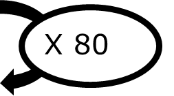
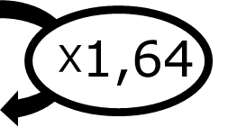
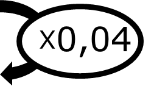

|
Chapitre 15
|
- Proportionnalité et pourcentages
|
Activité Introduction
Romain a trouvé un petit boulot pour les vacances, payé à l'heure.
Il travaille une première fois 5 heures et gagne 47€.
Il travaille ensuite 3 heures et gagne 28,2€.
-
Il effectue ensuite une journée de travail de 8 heures. Combien sera-t-il payé ce jour-là ?
-
Enfin il fait une session de 4 heures. Combien est-t-il payé ?
-
Le salaire minimum horaire est d'environ 9€23. Romain gagne-t-il plus que le salaire minimum ?
-
Combien gagnera-t-il pour une semaine de travail de 35 heures ?
Proportionnalité :
Définition :
Deux grandeurs sont proportionnelles si les valeurs de l'une s'obtiennent en multipliant les valeurs de l'autre par un même nombre non nul appelé coefficient de proportionnalité.
Exemple :
Une voiture roule à 80km/h, la distance parcourue est alors proportionnelle au temps de trajet :
|
× 80 |
| 2h de trajet |
────► |
160 km parcouru |
|
|
× 80 |
| 5h de trajet |
────► |
400 km parcouru |
Le tableau de proportionnalité permet de représenter cette proportionnalité.
| Temps de trajet (h) |
1 |
2 |
5 |
| Distance parcourue (km) |
80 |
160 |
400 |

Calcul d'une quatrième proportionnelle :
Linéarité :
Pour calculer une quatrième proportionnelle, on peut utiliser :
- L'addition de quantité (ou de colonne)
- La multiplication de quantité par un nombre non nul
Exemple :
Un robinet fuit et la quantité d'eau perdue est proportionnelle au temps qui passe :
| Temps (h) |
2 |
6 |
7 |
9 |
| Quantité d'eau (L) |
5 |
? |
17,5 |
? |
-
Pour obtenir la quantité d'eau perdu en 9h, on peut ajouter la quantité perdu en 2h et 7h (2 + 7 = 9) : $5 + 17,5 = 22,5 L$
-
La quantité d'eau perdue en 6h peut être obtenu en multipliant la quantité perdue en 2h par 3 (2 × 3 = 6) : $5\times3=15L$
Passage par l'unité :
Pour calculer une quatrième proportionnelle, on peut effectuer un passage par l'unité.
Exemple :
Le prix d'une quantité de pomme est proportionnel a la masse de pomme :
| Quantité de pomme (kg) |
2 |
1 |
5 |
| Prix (€) |
2,8 |
1,4 |
? |
Le prix de 5 kg de pomme peut-être obtenue en passant par le prix de 1kg (passage à l'unité).
1kg de pomme coûte $2,8 \div 2 = 1,40$€.
5kg de pomme coûte donc $1,40\times5=7$€
Coefficient de proportionnalité :
Pour calculer une quatrième proportionnelle, on peut calculer le coefficient de proportionnalité.
Exemple :
Le prix du carburant est proportionnel à son volume :
| Volume (L) |
18 |
53 |
| Prix (€) |
29,52 |
? |

Pour calculer le coefficient de proportionnalité, on divise une valeur de la ligne du bas par la quantité correspondante dans la ligne du haut.
Ici $29,52\div18 = 1,64$.
On peut alors trouver le prix de 53 L de carburant : $53\times1,64=86,92$€
Pourcentage :
Un pourcentage est une proportion par rapport à 100. $\textcolor{#e53935}{t} \% = \frac{ \textcolor{#e53935}{t} }{100}$
Exemple :
L'eau de la Mer Noir contient 2% de sel. Cela signifie que :
- La proportion de sel dans l'eau est de $\frac{4}{100}$.
- 100kg d'eau contient 4kg de sel.
- La masse d'eau et de sel sont proportionnel avec un coefficient de proportionnalité de $4\%=\frac{4}{100}= 0,04$
| Masse d'eau (kg) |
100 |
360 |
| Masse de sel (kg) |
4 |
? |

Pour calculer la quantité de sel dans 360kg, on multiplie : $360\times 4\% = 360 \times 0,04 = 14,4 kg$
Remarque :
- Le symbole % est un opérateur.